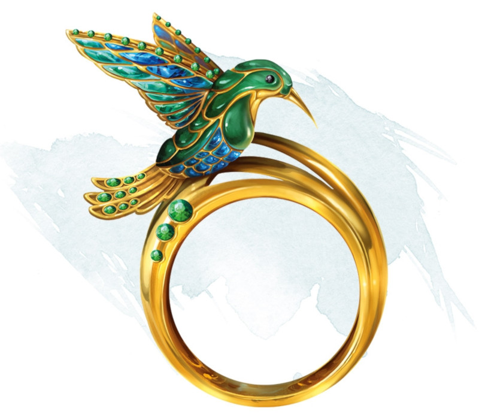

Ring of Evasion
Ring, rare (requires attunement)
This ring has 3 charges, and it regains 1d3 expended charges daily at dawn. When you fail a Dexterity saving throw while wearing it, you can use your reaction to expend 1 of its charges to succeed on that saving throw instead.
Dungeon Master´s Guide (SRD)
